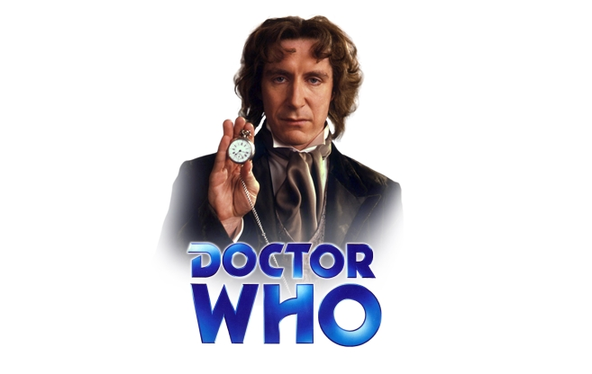

8º Doutor
Filme de 1996
Doctor Who foi posta “em hiato” pela BBC em 1989, com massivo apelo dos fãs a partir dali para que a série – que mantinha-se viva por meio de livros, audios, quadrinhos, etc – retornasse. Contudo, não havia interesse da BBC em voltar a custear e produzir a série por si só, o que fez com que a companhia passasse a buscar um parceiro no mercado televisivo americano. Negociações ocorreram, trocou-se até de parceira, até que a Fox se fixasse como coprodutora deste filme, que potencialmente serviria de piloto para uma nova série, exibida nos EUA e no Reino Unido.
Com esse filme, buscava-se não apenas continuar Doctor Who, mas apresentá-la ao público americano, sendo então necessário tanto trazer elementos já estabelecidos, quanto introduzir o personagem e parte da mitologia em meio a uma aventura do Doctor. Dentre as coisas mais interessantes acerca deste filme estão o cenário interno da TARDIS, que serviu de base ao da retomada de 2005, assim como por trazer, pela primeira vez, uma noção de imensidão à nave; a versão do tema da série, também algo até então inédito.
Doctor Who – The Movie, também conhecido pela alcunha de The Enemy Within, foi exibido em 14 de Maio de 1996 nos EUA, e somente no dia 27 do mesmo mês no Reino Unido, demonstrando mais uma vez como era primordial o público americano para que a série voltasse. Infelizmente, mesmo com bons índices de audiência no Reino Unido, o filme não foi um sucesso nos EUA, congelando as esperanças para que Doctor Who voltasse ao menos até 2005.
Sinopse:
Próximo ao fim de sua sétima vida, o Doctor é encarregado de transportar os restos do Master de volta ao planeta natal deles. Apesar de seu cuidado, seu velho inimigo não apenas está vivo, como também busca se vingar. Ele faz a TARDIS falhar, o que leva a nave a pousar em San Francisco em 1999, onde o Master consegue escapar e tenta colocar seu plano em prática. O Doctor precisa impedi-lo, mas acaba baleado por uma gangue.
Elenco:
- Sylvester McCoy – 7º Doctor
- Paul McGann – 8º Doctor
- Daphne Ashbrook – Grace Holloway
- Yee Jee Tso – Chang Lee
- Eric Roberts – Master
Links:
AVI(1,63 GB) MP4Torrent MKV Legendado(356 MB) Legenda/legendas.tv